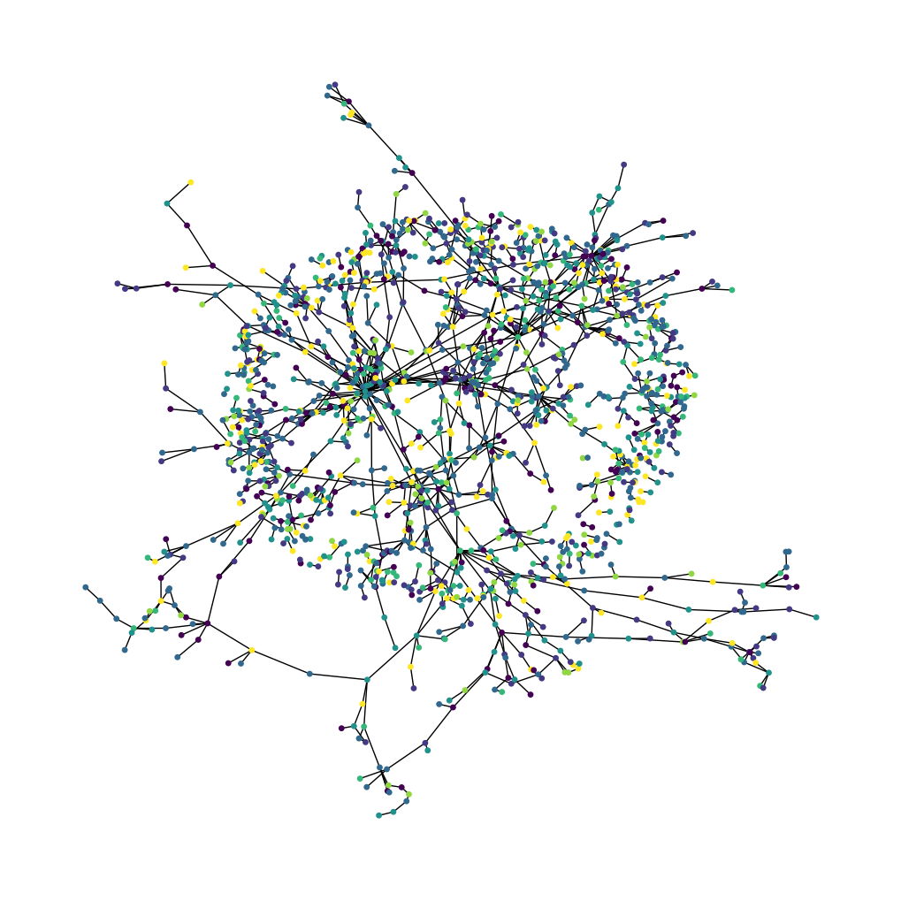
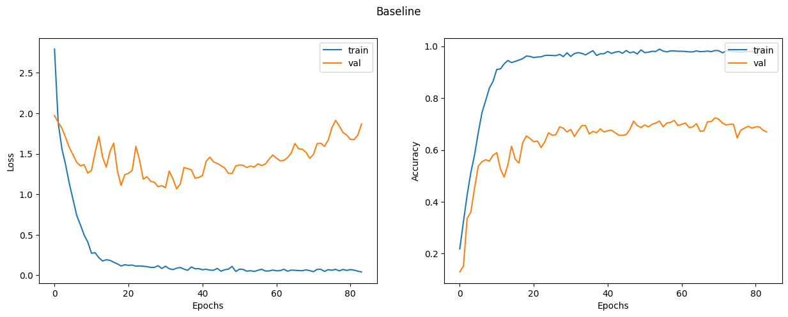
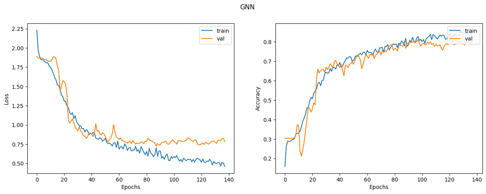

Node Classification with Graph Neural Networks
Author: Khalid Salama
Date created: 2021/05/30
Last modified: 2021/05/30
Description: Implementing a graph neural network model for predicting the topic of a paper given its citations.

Introduction
Many datasets in various machine learning (ML) applications have structural relationships between their entities, which can be represented as graphs. Such application includes social and communication networks analysis, traffic prediction, and fraud detection. Graph representation Learning aims to build and train models for graph datasets to be used for a variety of ML tasks.
This example demonstrate a simple implementation of a Graph Neural Network (GNN) model. The model is used for a node prediction task on the Cora dataset to predict the subject of a paper given its words and citations network.
Note that, we implement a Graph Convolution Layer from scratch to provide better understanding of how they work. However, there is a number of specialized TensorFlow-based libraries that provide rich GNN APIs, such as Spectral, StellarGraph, and GraphNets.
Setup
import os
# Choose backend: "jax", "torch", or "tensorflow"
os.environ["KERAS_BACKEND"] = "tensorflow"
import pandas as pd
import numpy as np
import networkx as nx
import matplotlib
# matplotlib.use("Agg") # Use non-interactive backend
import matplotlib.pyplot as plt
import keras
from keras import layers, ops
keras.utils.set_random_seed(42)
rng = np.random.default_rng(42)
Prepare and Download the Dataset
The Cora dataset consists of 2,708 scientific papers classified into one of seven classes.
The citation network consists of 5,429 links. Each paper has a binary word vector of size
1,433, indicating the presence of a corresponding word.
The dataset has two tap-separated files: cora.cites and cora.content.
- The
cora.citesincludes the citation records with two columns:cited_paper_id(target) andciting_paper_id(source). - The
cora.contentincludes the paper content records with 1,435 columns:paper_id,subject, and 1,433 binary features.
zip_file = keras.utils.get_file(
fname="cora.tgz",
origin="https://linqs-data.soe.ucsc.edu/public/lbc/cora.tgz",
extract=True,
)
data_dir = os.path.join(os.path.dirname(zip_file), "cora_extracted", "cora")
Process and visualize the dataset
citations = pd.read_csv(
os.path.join(data_dir, "cora.cites"),
sep="\t",
header=None,
names=["target", "source"],
)
print("Citations shape:", citations.shape)
citations.sample(frac=1).head() # display a sample of the `citations` DataFrame
Citations shape: (5429, 2)
| target | source | |
|---|---|---|
| 79 | 35 | 263498 |
| 3161 | 45605 | 503871 |
| 1643 | 9581 | 1130780 |
| 167 | 40 | 1114442 |
| 439 | 1365 | 22835 |
Now let's load the papers data into a Pandas DataFrame.
column_names = ["paper_id"] + [f"term_{idx}" for idx in range(1433)] + ["subject"]
papers = pd.read_csv(
os.path.join(data_dir, "cora.content"),
sep="\t",
header=None,
names=column_names,
)
print("Papers shape:", papers.shape)
Papers shape: (2708, 1435)
Now we display a sample of the papers DataFrame. The DataFrame includes the paper_id
and the subject columns, as well as 1,433 binary column representing whether a term exists
in the paper or not.
print(papers.sample(5).T)
1026 405 1202 461 \
paper_id 93273 16470 95597 919885
term_0 0 0 0 0
term_1 0 0 0 0
term_2 0 0 0 0
term_3 0 0 1 0
... ... ... ... ...
term_1429 0 0 0 0
term_1430 0 0 0 0
term_1431 0 0 0 0
term_1432 0 0 0 0
subject Theory Neural_Networks Reinforcement_Learning Neural_Networks
2285
paper_id 643695
term_0 0
term_1 0
term_2 0
term_3 0
... ...
term_1429 0
term_1430 0
term_1431 0
term_1432 0
subject Probabilistic_Methods
[1435 rows x 5 columns]
Let's display the count of the papers in each subject.
print(papers.subject.value_counts())
subject
Neural_Networks 818
Probabilistic_Methods 426
Genetic_Algorithms 418
Theory 351
Case_Based 298
Reinforcement_Learning 217
Rule_Learning 180
Name: count, dtype: int64
We convert the paper ids and the subjects into zero-based indices.
class_values = sorted(papers["subject"].unique())
class_idx = {name: id for id, name in enumerate(class_values)}
num_classes = len(class_values)
paper_idx = {name: idx for idx, name in enumerate(sorted(papers["paper_id"].unique()))}
papers["paper_id"] = papers["paper_id"].apply(lambda name: paper_idx[name])
citations["source"] = citations["source"].apply(lambda name: paper_idx[name])
citations["target"] = citations["target"].apply(lambda name: paper_idx[name])
papers["subject"] = papers["subject"].apply(lambda value: class_idx[value])
Now let's visualize the citation graph. Each node in the graph represents a paper, and the color of the node corresponds to its subject. Note that we only show a sample of the papers in the dataset.
plt.figure(figsize=(10, 10))
colors = papers["subject"].tolist()
cora_graph = nx.from_pandas_edgelist(citations.sample(n=1500))
subjects = list(papers[papers["paper_id"].isin(list(cora_graph.nodes))]["subject"])
nx.draw_spring(cora_graph, node_size=15, node_color=subjects)
plt.show()

Split the dataset into stratified train, validation, and test sets
train_ids, val_ids, test_ids = [], [], []
for cls, group in papers.groupby("subject"):
ids = group["paper_id"].to_numpy().copy()
rng.shuffle(ids)
n = len(ids)
n_train = int(0.50 * n)
n_val = int(0.15 * n)
train_ids.append(ids[:n_train])
val_ids.append(ids[n_train : n_train + n_val])
test_ids.append(ids[n_train + n_val :])
train_indices = np.concatenate(train_ids).astype("int32")
val_indices = np.concatenate(val_ids).astype("int32")
test_indices = np.concatenate(test_ids).astype("int32")
labels_by_id = papers.sort_values("paper_id")["subject"].to_numpy().astype("int32")
train_labels = labels_by_id[train_indices]
val_labels = labels_by_id[val_indices]
test_labels = labels_by_id[test_indices]
# Shuffle training nodes (good practice)
perm = rng.permutation(len(train_indices))
train_indices = train_indices[perm]
train_labels = train_labels[perm]
print("Train idx/labels:", train_indices.shape, train_labels.shape)
print("Val idx/labels:", val_indices.shape, val_labels.shape)
print("Test idx/labels:", test_indices.shape, test_labels.shape)
Train idx/labels: (1353,) (1353,)
Val idx/labels: (402,) (402,)
Test idx/labels: (953,) (953,)
Implement Train and Evaluate Experiment
hidden_units = [32, 32]
dropout_rate = 0.5
learning_rate = 0.01
num_epochs = 300
batch_size = 256
This function compiles and trains an input model using the given training data.
def run_experiment(model, x_train, y_train, x_val, y_val):
model.compile(
optimizer=keras.optimizers.Adam(learning_rate=learning_rate),
loss=keras.losses.SparseCategoricalCrossentropy(from_logits=True),
metrics=[keras.metrics.SparseCategoricalAccuracy(name="acc")],
)
early_stopping = keras.callbacks.EarlyStopping(
monitor="val_loss",
mode="min",
patience=50,
restore_best_weights=True,
)
history = model.fit(
x=x_train,
y=y_train,
validation_data=(x_val, y_val),
epochs=num_epochs,
batch_size=batch_size,
callbacks=[early_stopping],
verbose=2,
)
return history
This function displays the loss and accuracy curves of the model during training.
def display_learning_curves(history, title=None):
fig, (ax1, ax2) = plt.subplots(1, 2, figsize=(15, 5))
if title:
fig.suptitle(title)
ax1.plot(history.history["loss"])
ax1.plot(history.history["val_loss"])
ax1.legend(["train", "val"], loc="upper right")
ax1.set_xlabel("Epochs")
ax1.set_ylabel("Loss")
ax2.plot(history.history["acc"])
ax2.plot(history.history["val_acc"])
ax2.legend(["train", "val"], loc="upper right")
ax2.set_xlabel("Epochs")
ax2.set_ylabel("Accuracy")
plt.show()
Implement Feedforward Network (FFN) Module
We will use this module in the baseline and the GNN models.
def create_ffn(hidden_units, dropout_rate, name=None):
ffn_layers = []
for units in hidden_units:
ffn_layers.append(layers.BatchNormalization())
ffn_layers.append(layers.Dropout(dropout_rate))
ffn_layers.append(layers.Dense(units, activation="gelu"))
return keras.Sequential(ffn_layers, name=name)
Build a Baseline Neural Network Model
Prepare the data for the baseline model
feature_names = [c for c in papers.columns if c not in ("paper_id", "subject")]
node_features_np = (
papers.sort_values("paper_id")[feature_names].to_numpy().astype("float32")
)
edges_np = citations[["source", "target"]].to_numpy().T.astype("int32")
graph_info = (node_features_np, edges_np, None)
# For the baseline, x is just the node feature row for each node index.
x_train_base = node_features_np[train_indices]
x_val_base = node_features_np[val_indices]
x_test_base = node_features_np[test_indices]
num_features = node_features_np.shape[1]
Implement a baseline classifier
We add five FFN blocks with skip connections, so that we generate a baseline model with roughly the same number of parameters as the GNN models to be built later.
def create_baseline_model(hidden_units, num_classes, dropout_rate=0.2):
inputs = layers.Input(shape=(num_features,), name="input_features")
x = create_ffn(hidden_units, dropout_rate, name="ffn_block1")(inputs)
for block_idx in range(4):
x1 = create_ffn(hidden_units, dropout_rate, name=f"ffn_block{block_idx + 2}")(x)
x = layers.Add(name=f"skip_connection{block_idx + 2}")([x, x1])
logits = layers.Dense(num_classes, name="logits")(x)
return keras.Model(inputs=inputs, outputs=logits, name="baseline")
baseline_model = create_baseline_model(hidden_units, num_classes, dropout_rate=0.2)
baseline_model.summary()
Model: "baseline"
┏━━━━━━━━━━━━━━━━━━━━━┳━━━━━━━━━━━━━━━━━━━┳━━━━━━━━━━━━┳━━━━━━━━━━━━━━━━━━━┓ ┃ Layer (type) ┃ Output Shape ┃ Param # ┃ Connected to ┃ ┡━━━━━━━━━━━━━━━━━━━━━╇━━━━━━━━━━━━━━━━━━━╇━━━━━━━━━━━━╇━━━━━━━━━━━━━━━━━━━┩ │ input_features │ (None, 1433) │ 0 │ - │ │ (InputLayer) │ │ │ │ ├─────────────────────┼───────────────────┼────────────┼───────────────────┤ │ ffn_block1 │ (None, 32) │ 52,804 │ input_features[0… │ │ (Sequential) │ │ │ │ ├─────────────────────┼───────────────────┼────────────┼───────────────────┤ │ ffn_block2 │ (None, 32) │ 2,368 │ ffn_block1[0][0] │ │ (Sequential) │ │ │ │ ├─────────────────────┼───────────────────┼────────────┼───────────────────┤ │ skip_connection2 │ (None, 32) │ 0 │ ffn_block1[0][0], │ │ (Add) │ │ │ ffn_block2[0][0] │ ├─────────────────────┼───────────────────┼────────────┼───────────────────┤ │ ffn_block3 │ (None, 32) │ 2,368 │ skip_connection2… │ │ (Sequential) │ │ │ │ ├─────────────────────┼───────────────────┼────────────┼───────────────────┤ │ skip_connection3 │ (None, 32) │ 0 │ skip_connection2… │ │ (Add) │ │ │ ffn_block3[0][0] │ ├─────────────────────┼───────────────────┼────────────┼───────────────────┤ │ ffn_block4 │ (None, 32) │ 2,368 │ skip_connection3… │ │ (Sequential) │ │ │ │ ├─────────────────────┼───────────────────┼────────────┼───────────────────┤ │ skip_connection4 │ (None, 32) │ 0 │ skip_connection3… │ │ (Add) │ │ │ ffn_block4[0][0] │ ├─────────────────────┼───────────────────┼────────────┼───────────────────┤ │ ffn_block5 │ (None, 32) │ 2,368 │ skip_connection4… │ │ (Sequential) │ │ │ │ ├─────────────────────┼───────────────────┼────────────┼───────────────────┤ │ skip_connection5 │ (None, 32) │ 0 │ skip_connection4… │ │ (Add) │ │ │ ffn_block5[0][0] │ ├─────────────────────┼───────────────────┼────────────┼───────────────────┤ │ logits (Dense) │ (None, 7) │ 231 │ skip_connection5… │ └─────────────────────┴───────────────────┴────────────┴───────────────────┘
Total params: 62,507 (244.17 KB)
Trainable params: 59,065 (230.72 KB)
Non-trainable params: 3,442 (13.45 KB)
Train the baseline classifier
baseline_history = run_experiment(
baseline_model,
x_train_base,
train_labels,
x_val_base,
val_labels,
)
Epoch 1/300
6/6 - 3s - 442ms/step - acc: 0.2180 - loss: 2.7924 - val_acc: 0.1294 - val_loss: 1.9717
Epoch 2/300
6/6 - 0s - 14ms/step - acc: 0.3237 - loss: 1.8799 - val_acc: 0.1517 - val_loss: 1.8875
Epoch 3/300
6/6 - 0s - 13ms/step - acc: 0.4265 - loss: 1.5620 - val_acc: 0.3358 - val_loss: 1.8157
Epoch 4/300
6/6 - 0s - 13ms/step - acc: 0.5129 - loss: 1.3639 - val_acc: 0.3607 - val_loss: 1.7025
Epoch 5/300
6/6 - 0s - 13ms/step - acc: 0.5809 - loss: 1.1341 - val_acc: 0.4527 - val_loss: 1.5785
Epoch 6/300
6/6 - 0s - 14ms/step - acc: 0.6659 - loss: 0.9370 - val_acc: 0.5373 - val_loss: 1.4879
Epoch 7/300
6/6 - 0s - 13ms/step - acc: 0.7435 - loss: 0.7393 - val_acc: 0.5547 - val_loss: 1.3945
Epoch 8/300
6/6 - 0s - 13ms/step - acc: 0.7901 - loss: 0.6222 - val_acc: 0.5622 - val_loss: 1.3511
Epoch 9/300
6/6 - 0s - 13ms/step - acc: 0.8381 - loss: 0.4976 - val_acc: 0.5572 - val_loss: 1.3657
Epoch 10/300
6/6 - 0s - 14ms/step - acc: 0.8647 - loss: 0.4091 - val_acc: 0.5796 - val_loss: 1.2605
Epoch 11/300
6/6 - 0s - 13ms/step - acc: 0.9106 - loss: 0.2718 - val_acc: 0.5896 - val_loss: 1.2958
Epoch 12/300
6/6 - 0s - 13ms/step - acc: 0.9128 - loss: 0.2778 - val_acc: 0.5274 - val_loss: 1.5226
Epoch 13/300
6/6 - 0s - 13ms/step - acc: 0.9320 - loss: 0.2161 - val_acc: 0.4950 - val_loss: 1.7141
Epoch 14/300
6/6 - 0s - 13ms/step - acc: 0.9453 - loss: 0.1767 - val_acc: 0.5423 - val_loss: 1.4579
Epoch 15/300
6/6 - 0s - 13ms/step - acc: 0.9372 - loss: 0.1911 - val_acc: 0.6144 - val_loss: 1.3349
Epoch 16/300
6/6 - 0s - 13ms/step - acc: 0.9416 - loss: 0.1842 - val_acc: 0.5647 - val_loss: 1.5300
Epoch 17/300
6/6 - 0s - 12ms/step - acc: 0.9468 - loss: 0.1605 - val_acc: 0.5498 - val_loss: 1.6318
Epoch 18/300
6/6 - 0s - 13ms/step - acc: 0.9520 - loss: 0.1406 - val_acc: 0.6269 - val_loss: 1.2903
Epoch 19/300
6/6 - 0s - 13ms/step - acc: 0.9623 - loss: 0.1143 - val_acc: 0.6542 - val_loss: 1.1092
Epoch 20/300
6/6 - 0s - 12ms/step - acc: 0.9608 - loss: 0.1301 - val_acc: 0.6443 - val_loss: 1.2416
Epoch 21/300
6/6 - 0s - 13ms/step - acc: 0.9564 - loss: 0.1224 - val_acc: 0.6318 - val_loss: 1.2592
Epoch 22/300
6/6 - 0s - 12ms/step - acc: 0.9586 - loss: 0.1255 - val_acc: 0.6343 - val_loss: 1.2957
Epoch 23/300
6/6 - 0s - 13ms/step - acc: 0.9593 - loss: 0.1129 - val_acc: 0.6095 - val_loss: 1.5917
Epoch 24/300
6/6 - 0s - 12ms/step - acc: 0.9645 - loss: 0.1147 - val_acc: 0.6318 - val_loss: 1.4226
Epoch 25/300
6/6 - 0s - 13ms/step - acc: 0.9653 - loss: 0.1109 - val_acc: 0.6667 - val_loss: 1.1867
Epoch 26/300
6/6 - 0s - 13ms/step - acc: 0.9645 - loss: 0.1059 - val_acc: 0.6567 - val_loss: 1.2174
Epoch 27/300
6/6 - 0s - 13ms/step - acc: 0.9638 - loss: 0.0966 - val_acc: 0.6592 - val_loss: 1.1610
Epoch 28/300
6/6 - 0s - 13ms/step - acc: 0.9690 - loss: 0.0974 - val_acc: 0.6891 - val_loss: 1.1480
Epoch 29/300
6/6 - 0s - 13ms/step - acc: 0.9601 - loss: 0.1177 - val_acc: 0.6841 - val_loss: 1.0938
Epoch 30/300
6/6 - 0s - 13ms/step - acc: 0.9749 - loss: 0.0835 - val_acc: 0.6692 - val_loss: 1.1072
Epoch 31/300
6/6 - 0s - 13ms/step - acc: 0.9608 - loss: 0.1113 - val_acc: 0.6791 - val_loss: 1.0808
Epoch 32/300
6/6 - 0s - 13ms/step - acc: 0.9719 - loss: 0.0806 - val_acc: 0.6517 - val_loss: 1.2868
Epoch 33/300
6/6 - 0s - 13ms/step - acc: 0.9756 - loss: 0.0693 - val_acc: 0.6741 - val_loss: 1.1928
Epoch 34/300
6/6 - 0s - 13ms/step - acc: 0.9727 - loss: 0.0869 - val_acc: 0.6940 - val_loss: 1.0674
Epoch 35/300
6/6 - 0s - 13ms/step - acc: 0.9667 - loss: 0.0958 - val_acc: 0.6940 - val_loss: 1.1264
Epoch 36/300
6/6 - 0s - 13ms/step - acc: 0.9749 - loss: 0.0763 - val_acc: 0.6617 - val_loss: 1.3300
Epoch 37/300
6/6 - 0s - 13ms/step - acc: 0.9830 - loss: 0.0608 - val_acc: 0.6716 - val_loss: 1.3168
Epoch 38/300
6/6 - 0s - 13ms/step - acc: 0.9645 - loss: 0.1027 - val_acc: 0.6667 - val_loss: 1.3025
Epoch 39/300
6/6 - 0s - 13ms/step - acc: 0.9712 - loss: 0.0802 - val_acc: 0.6816 - val_loss: 1.1986
Epoch 40/300
6/6 - 0s - 13ms/step - acc: 0.9712 - loss: 0.0808 - val_acc: 0.6692 - val_loss: 1.2074
Epoch 41/300
6/6 - 0s - 13ms/step - acc: 0.9800 - loss: 0.0677 - val_acc: 0.6741 - val_loss: 1.2311
Epoch 42/300
6/6 - 0s - 13ms/step - acc: 0.9727 - loss: 0.0739 - val_acc: 0.6766 - val_loss: 1.4087
Epoch 43/300
6/6 - 0s - 13ms/step - acc: 0.9771 - loss: 0.0639 - val_acc: 0.6667 - val_loss: 1.4583
Epoch 44/300
6/6 - 0s - 13ms/step - acc: 0.9800 - loss: 0.0616 - val_acc: 0.6567 - val_loss: 1.4003
Epoch 45/300
6/6 - 0s - 13ms/step - acc: 0.9727 - loss: 0.0845 - val_acc: 0.6567 - val_loss: 1.3805
Epoch 46/300
6/6 - 0s - 13ms/step - acc: 0.9837 - loss: 0.0505 - val_acc: 0.6592 - val_loss: 1.3541
Epoch 47/300
6/6 - 0s - 13ms/step - acc: 0.9749 - loss: 0.0682 - val_acc: 0.6791 - val_loss: 1.3244
Epoch 48/300
6/6 - 0s - 13ms/step - acc: 0.9786 - loss: 0.0750 - val_acc: 0.7114 - val_loss: 1.2604
Epoch 49/300
6/6 - 0s - 13ms/step - acc: 0.9704 - loss: 0.1090 - val_acc: 0.6940 - val_loss: 1.2559
Epoch 50/300
6/6 - 0s - 13ms/step - acc: 0.9860 - loss: 0.0464 - val_acc: 0.6866 - val_loss: 1.3500
Epoch 51/300
6/6 - 0s - 12ms/step - acc: 0.9756 - loss: 0.0745 - val_acc: 0.6965 - val_loss: 1.3616
Epoch 52/300
6/6 - 0s - 13ms/step - acc: 0.9771 - loss: 0.0718 - val_acc: 0.6891 - val_loss: 1.3573
Epoch 53/300
6/6 - 0s - 12ms/step - acc: 0.9808 - loss: 0.0498 - val_acc: 0.6990 - val_loss: 1.3305
Epoch 54/300
6/6 - 0s - 12ms/step - acc: 0.9800 - loss: 0.0565 - val_acc: 0.7040 - val_loss: 1.3492
Epoch 55/300
6/6 - 0s - 13ms/step - acc: 0.9889 - loss: 0.0467 - val_acc: 0.7114 - val_loss: 1.3366
Epoch 56/300
6/6 - 0s - 13ms/step - acc: 0.9815 - loss: 0.0608 - val_acc: 0.6891 - val_loss: 1.3757
Epoch 57/300
6/6 - 0s - 13ms/step - acc: 0.9786 - loss: 0.0737 - val_acc: 0.7040 - val_loss: 1.3552
Epoch 58/300
6/6 - 0s - 13ms/step - acc: 0.9823 - loss: 0.0525 - val_acc: 0.7065 - val_loss: 1.3728
Epoch 59/300
6/6 - 0s - 12ms/step - acc: 0.9823 - loss: 0.0530 - val_acc: 0.7139 - val_loss: 1.4342
Epoch 60/300
6/6 - 0s - 13ms/step - acc: 0.9808 - loss: 0.0641 - val_acc: 0.6940 - val_loss: 1.4841
Epoch 61/300
6/6 - 0s - 13ms/step - acc: 0.9808 - loss: 0.0553 - val_acc: 0.6990 - val_loss: 1.4475
Epoch 62/300
6/6 - 0s - 13ms/step - acc: 0.9800 - loss: 0.0570 - val_acc: 0.7040 - val_loss: 1.4126
Epoch 63/300
6/6 - 0s - 13ms/step - acc: 0.9786 - loss: 0.0736 - val_acc: 0.6866 - val_loss: 1.4189
Epoch 64/300
6/6 - 0s - 13ms/step - acc: 0.9786 - loss: 0.0500 - val_acc: 0.6891 - val_loss: 1.4526
Epoch 65/300
6/6 - 0s - 12ms/step - acc: 0.9823 - loss: 0.0635 - val_acc: 0.7015 - val_loss: 1.5099
Epoch 66/300
6/6 - 0s - 13ms/step - acc: 0.9793 - loss: 0.0613 - val_acc: 0.6716 - val_loss: 1.6280
Epoch 67/300
6/6 - 0s - 13ms/step - acc: 0.9800 - loss: 0.0576 - val_acc: 0.6741 - val_loss: 1.5615
Epoch 68/300
6/6 - 0s - 12ms/step - acc: 0.9815 - loss: 0.0560 - val_acc: 0.7090 - val_loss: 1.5566
Epoch 69/300
6/6 - 0s - 13ms/step - acc: 0.9793 - loss: 0.0662 - val_acc: 0.7090 - val_loss: 1.5180
Epoch 70/300
6/6 - 0s - 12ms/step - acc: 0.9837 - loss: 0.0571 - val_acc: 0.7239 - val_loss: 1.4441
Epoch 71/300
6/6 - 0s - 13ms/step - acc: 0.9830 - loss: 0.0442 - val_acc: 0.7189 - val_loss: 1.4908
Epoch 72/300
6/6 - 0s - 13ms/step - acc: 0.9749 - loss: 0.0721 - val_acc: 0.7040 - val_loss: 1.6256
Epoch 73/300
6/6 - 0s - 13ms/step - acc: 0.9808 - loss: 0.0733 - val_acc: 0.6965 - val_loss: 1.6301
Epoch 74/300
6/6 - 0s - 12ms/step - acc: 0.9823 - loss: 0.0478 - val_acc: 0.6990 - val_loss: 1.5918
Epoch 75/300
6/6 - 0s - 13ms/step - acc: 0.9786 - loss: 0.0691 - val_acc: 0.6990 - val_loss: 1.6703
Epoch 76/300
6/6 - 0s - 13ms/step - acc: 0.9793 - loss: 0.0615 - val_acc: 0.6468 - val_loss: 1.8217
Epoch 77/300
6/6 - 0s - 13ms/step - acc: 0.9763 - loss: 0.0728 - val_acc: 0.6766 - val_loss: 1.9131
Epoch 78/300
6/6 - 0s - 12ms/step - acc: 0.9800 - loss: 0.0540 - val_acc: 0.6841 - val_loss: 1.8424
Epoch 79/300
6/6 - 0s - 12ms/step - acc: 0.9786 - loss: 0.0717 - val_acc: 0.6915 - val_loss: 1.7623
Epoch 80/300
6/6 - 0s - 13ms/step - acc: 0.9808 - loss: 0.0595 - val_acc: 0.6841 - val_loss: 1.7313
Epoch 81/300
6/6 - 0s - 13ms/step - acc: 0.9778 - loss: 0.0698 - val_acc: 0.6891 - val_loss: 1.6779
Epoch 82/300
6/6 - 0s - 13ms/step - acc: 0.9852 - loss: 0.0631 - val_acc: 0.6891 - val_loss: 1.6759
Epoch 83/300
6/6 - 0s - 12ms/step - acc: 0.9845 - loss: 0.0501 - val_acc: 0.6766 - val_loss: 1.7311
Epoch 84/300
6/6 - 0s - 13ms/step - acc: 0.9874 - loss: 0.0407 - val_acc: 0.6692 - val_loss: 1.8671
Let's plot the learning curves.
display_learning_curves(baseline_history, title="Baseline")

Now we evaluate the baseline model on the test data split.
_, test_accuracy = baseline_model.evaluate(x=x_test_base, y=test_labels, verbose=0)
print(f"Test accuracy: {round(test_accuracy * 100, 2)}%")
Test accuracy: 73.24%
Examine the baseline model predictions
Let's create new data instances by randomly generating binary word vectors with respect to the word presence probabilities.
def generate_random_instances(num_instances):
token_probability = x_train_base.mean(axis=0)
instances = []
for _ in range(num_instances):
probabilities = np.random.uniform(size=len(token_probability))
instance = (probabilities <= token_probability).astype(int)
instances.append(instance)
return np.array(instances)
def display_class_probabilities(probabilities):
for instance_idx, probs in enumerate(probabilities):
print(f"Instance {instance_idx + 1}:")
for class_idx, prob in enumerate(probs):
print(f"- {class_values[class_idx]}: {round(prob * 100, 2)}%")
Now we show the baseline model predictions given these randomly generated instances.
new_instances = generate_random_instances(num_classes)
logits = baseline_model.predict(new_instances)
probabilities = ops.convert_to_numpy(
keras.activations.softmax(ops.convert_to_tensor(logits))
)
display_class_probabilities(probabilities)
1/1 ━━━━━━━━━━━━━━━━━━━━ 0s 120ms/step
Instance 1:
- Case_Based: 0.0%
- Genetic_Algorithms: 99.8499984741211%
- Neural_Networks: 0.09000000357627869%
- Probabilistic_Methods: 0.019999999552965164%
- Reinforcement_Learning: 0.029999999329447746%
- Rule_Learning: 0.009999999776482582%
- Theory: 0.0%
Instance 2:
- Case_Based: 0.47999998927116394%
- Genetic_Algorithms: 0.44999998807907104%
- Neural_Networks: 1.7000000476837158%
- Probabilistic_Methods: 92.27999877929688%
- Reinforcement_Learning: 0.10999999940395355%
- Rule_Learning: 1.149999976158142%
- Theory: 3.8399999141693115%
Instance 3:
- Case_Based: 25.6299991607666%
- Genetic_Algorithms: 0.9200000166893005%
- Neural_Networks: 29.25%
- Probabilistic_Methods: 13.300000190734863%
- Reinforcement_Learning: 1.4800000190734863%
- Rule_Learning: 17.420000076293945%
- Theory: 11.989999771118164%
Instance 4:
- Case_Based: 0.009999999776482582%
- Genetic_Algorithms: 98.80999755859375%
- Neural_Networks: 1.0199999809265137%
- Probabilistic_Methods: 0.029999999329447746%
- Reinforcement_Learning: 0.029999999329447746%
- Rule_Learning: 0.07000000029802322%
- Theory: 0.029999999329447746%
Instance 5:
- Case_Based: 10.199999809265137%
- Genetic_Algorithms: 70.12000274658203%
- Neural_Networks: 6.730000019073486%
- Probabilistic_Methods: 3.9100000858306885%
- Reinforcement_Learning: 3.0399999618530273%
- Rule_Learning: 2.2300000190734863%
- Theory: 3.759999990463257%
Instance 6:
- Case_Based: 50.04999923706055%
- Genetic_Algorithms: 1.2400000095367432%
- Neural_Networks: 5.019999980926514%
- Probabilistic_Methods: 39.45000076293945%
- Reinforcement_Learning: 0.05000000074505806%
- Rule_Learning: 0.23000000417232513%
- Theory: 3.9600000381469727%
Instance 7:
- Case_Based: 0.029999999329447746%
- Genetic_Algorithms: 0.0%
- Neural_Networks: 99.81999969482422%
- Probabilistic_Methods: 0.14000000059604645%
- Reinforcement_Learning: 0.0%
- Rule_Learning: 0.0%
- Theory: 0.0%
Build a Graph Neural Network Model
Prepare the data for the graph model
Preparing and loading the graphs data into the model for training is the most challenging part in GNN models, which is addressed in different ways by the specialised libraries. In this example, we show a simple approach for preparing and using graph data that is suitable if your dataset consists of a single graph that fits entirely in memory.
The graph data is represented by the graph_info tuple, which consists of the following
three elements:
node_features: This is a[num_nodes, num_features]NumPy array that includes the node features. In this dataset, the nodes are the papers, and thenode_featuresare the word-presence binary vectors of each paper.edges: This is[num_edges, num_edges]NumPy array representing a sparse adjacency matrix of the links between the nodes. In this example, the links are the citations between the papers.edge_weights(optional): This is a[num_edges]NumPy array that includes the edge weights, which quantify the relationships between nodes in the graph. In this example, there are no weights for the paper citations.
# Create an edges array (sparse adjacency matrix) of shape [2, num_edges].
edges = citations[["source", "target"]].to_numpy().T
# Create an edge weights array of ones.
edge_weights = ops.ones(shape=edges.shape[1])
# Create a node features array of shape [num_nodes, num_features].
node_features = ops.cast(
papers.sort_values("paper_id")[feature_names].to_numpy(), dtype="float32"
)
# Create graph info tuple with node_features, edges, and edge_weights.
graph_info = (node_features, edges, edge_weights)
print("Edges shape:", edges.shape)
print("Nodes shape:", node_features.shape)
Edges shape:
(2, 5429)
Nodes shape: (2708, 1433)
Implement a graph convolution layer
We implement the graph convolution module as a custom Keras 3 Layer. Our GraphConvLayer is designed to be backend-agnostic, utilizing keras.ops to perform the following three steps:
- Prepare: The input node representations are processed using a Feed-Forward Network (FFN) to produce a message. This is achieved by gathering neighbor representations using ops.take and transforming them through the ffn_prepare block. If edge_weights are provided, they are scaled using ops.expand_dims to ensure correct broadcasting during message transformation
- Aggregate: The messages of the neighbors for each node are aggregated using a permutation-invariant pooling operation. In this Keras 3 implementation, we utilize ops.segment_sum, ops.segment_mean, or ops.segment_max (replacing the legacy tf.math.unsorted_segment APIs). These operations efficiently aggregate neighbor information into a single message for each target node based on the graph's edge indices.
- Update: The
node_repesentationsandaggregated_messages—both of shape[num_nodes, representation_dim]— are combined and processed to produce the new state of the node representations (node embeddings). Ifcombination_typeisgru, thenode_repesentationsandaggregated_messagesare stacked to create a sequence, then processed by a GRU layer. Otherwise, thenode_repesentationsandaggregated_messagesare added or concatenated, then processed using a FFN.
The technique implemented use ideas from Graph Convolutional Networks, GraphSage, Graph Isomorphism Network, Simple Graph Networks, and Gated Graph Sequence Neural Networks. Two other key techniques that are not covered are Graph Attention Networks and Message Passing Neural Networks.
def create_gru(hidden_units, dropout_rate):
inputs = layers.Input(shape=(2, hidden_units[0]))
x = inputs
for units in hidden_units:
x = layers.GRU(
units=units,
activation="tanh",
recurrent_activation="sigmoid",
return_sequences=True,
dropout=dropout_rate,
)(x)
return keras.Model(inputs=inputs, outputs=x)
class GraphConvLayer(layers.Layer):
def __init__(
self,
hidden_units,
dropout_rate=0.2,
aggregation_type="mean",
combination_type="concat",
normalize=False,
**kwargs,
):
super().__init__(**kwargs)
self.aggregation_type = aggregation_type
self.combination_type = combination_type
self.normalize = normalize
self.ffn_prepare = create_ffn(hidden_units, dropout_rate)
self.update_fn = (
create_gru(hidden_units, dropout_rate)
if combination_type == "gru"
else create_ffn(hidden_units, dropout_rate)
)
def prepare(self, node_representations, weights=None, training=None):
messages = self.ffn_prepare(node_representations, training=training)
if weights is not None:
messages = messages * ops.expand_dims(weights, -1)
return messages
def aggregate(self, node_indices, neighbour_messages, node_representations):
num_nodes = ops.shape(node_representations)[0]
if self.aggregation_type == "sum":
return ops.segment_sum(
neighbour_messages, node_indices, num_segments=num_nodes
)
elif self.aggregation_type == "mean":
return ops.segment_mean(
neighbour_messages, node_indices, num_segments=num_nodes
)
elif self.aggregation_type == "max":
return ops.segment_max(
neighbour_messages, node_indices, num_segments=num_nodes
)
else:
raise ValueError(f"Invalid aggregation type: {self.aggregation_type}")
def update(self, node_representations, aggregated_messages, training=None):
if self.combination_type == "gru":
h = ops.stack([node_representations, aggregated_messages], axis=1)
elif self.combination_type == "concat":
h = ops.concatenate([node_representations, aggregated_messages], axis=-1)
elif self.combination_type == "add":
h = node_representations + aggregated_messages
else:
raise ValueError(f"Invalid combination type: {self.combination_type}")
node_embeddings = self.update_fn(h, training=training)
if self.combination_type == "gru":
node_embeddings = ops.unstack(node_embeddings, axis=1)[-1]
if self.normalize:
node_embeddings = ops.normalize(node_embeddings, axis=-1, order=2)
return node_embeddings
def call(self, inputs, training=None):
node_representations, edges, edge_weights = inputs
node_indices, neighbour_indices = edges[0], edges[1]
neighbour_representations = ops.take(
node_representations, neighbour_indices, axis=0
)
neighbour_messages = self.prepare(
neighbour_representations, edge_weights, training=training
)
aggregated_messages = self.aggregate(
node_indices, neighbour_messages, node_representations
)
return self.update(node_representations, aggregated_messages, training=training)
Implement a graph neural network node classifier
The GNN classification model follows the Design Space for Graph Neural Networks approach, as follows:
Graph Augmentation & Stability: In the init method, the model optionally adds self-loops to the edge list. This ensures each node preserves its own identity during message passing. We also implement Edge Weight Normalization (Global or Per-node). Per-node normalization calculates the degree of each node using ops.segment_sum and scales incoming messages, which is critical for preventing gradient explosion in large or dense graphs. Preprocessing: A Feed-Forward Network (FFN) is applied to the raw node features to generate the initial latent representations. Graph Convolutions with Skip Connections: The model applies multiple GraphConvLayer blocks. To mitigate the risk of "over-smoothing" (where node embeddings become indistinguishable after several hops), we implement Residual (Skip) Connections, adding the input of the convolution back to its output. Post-processing: A final FFN processes the node embeddings to refine the features before classification. Output Logic: The final layer is a Dense layer that produces logits for each class. Note on Data Handling: Unlike standard models where all data is passed as input, this model stores the global graph structure (node_features and edges) as internal tensors converted via ops.convert_to_tensor. The model's call() method accepts a batch of node indices rather than the full graph. It uses ops.take to efficiently retrieve the specific embeddings for the requested indices, allowing for efficient mini-batch training on a single large graph.
class GNNNodeClassifier(keras.Model):
def __init__(
self,
graph_info,
num_classes,
hidden_units,
aggregation_type="sum",
combination_type="concat",
dropout_rate=0.5,
normalize=True,
add_self_loops=True,
edge_weight_normalization="per_node", # "none" | "global" | "per_node"
**kwargs,
):
super().__init__(**kwargs)
node_features, edges, edge_weights = graph_info
num_nodes = node_features.shape[0]
self.node_features = ops.convert_to_tensor(node_features, dtype="float32")
if add_self_loops:
self_loops = np.stack(
[np.arange(num_nodes), np.arange(num_nodes)], axis=0
).astype("int32")
edges = np.concatenate([edges, self_loops], axis=1)
self.edges = ops.convert_to_tensor(edges, dtype="int32")
num_edges = edges.shape[1]
if edge_weights is None:
edge_weights = ops.ones(shape=(num_edges,), dtype="float32")
else:
edge_weights = ops.convert_to_tensor(edge_weights, dtype="float32")
if add_self_loops:
loop_weights = ops.ones(shape=(num_nodes,), dtype="float32")
edge_weights = ops.concatenate([edge_weights, loop_weights], axis=0)
if edge_weight_normalization == "global":
edge_weights = edge_weights / (ops.sum(edge_weights) + 1e-7)
elif edge_weight_normalization == "per_node":
node_indices = self.edges[0]
deg = ops.segment_sum(edge_weights, node_indices, num_segments=num_nodes)
deg = ops.maximum(deg, 1.0)
edge_weights = edge_weights / ops.take(deg, node_indices, axis=0)
elif edge_weight_normalization == "none":
pass
else:
raise ValueError(
"edge_weight_normalization must be 'none', 'global', or 'per_node'."
)
self.edge_weights = edge_weights
self.preprocess = create_ffn(hidden_units, dropout_rate, name="preprocess")
self.conv1 = GraphConvLayer(
hidden_units,
dropout_rate=dropout_rate,
aggregation_type=aggregation_type,
combination_type=combination_type,
normalize=normalize,
name="graph_conv1",
)
self.conv2 = GraphConvLayer(
hidden_units,
dropout_rate=dropout_rate,
aggregation_type=aggregation_type,
combination_type=combination_type,
normalize=normalize,
name="graph_conv2",
)
self.postprocess = create_ffn(hidden_units, dropout_rate, name="postprocess")
self.compute_logits = layers.Dense(num_classes, name="logits")
def call(self, input_node_indices, training=None):
x = self.preprocess(self.node_features, training=training)
x1 = self.conv1((x, self.edges, self.edge_weights), training=training)
x = x + x1
x2 = self.conv2((x, self.edges, self.edge_weights), training=training)
x = x + x2
x = self.postprocess(x, training=training)
node_embeddings = ops.take(x, input_node_indices, axis=0)
return self.compute_logits(node_embeddings)
Let's test instantiating and calling the GNN model.
Notice that if you provide N node indices, the output will be a tensor of shape [N, num_classes],
regardless of the size of the graph.
gnn_model = GNNNodeClassifier(
graph_info=graph_info,
num_classes=num_classes,
hidden_units=[32, 32],
aggregation_type="sum",
combination_type="concat",
dropout_rate=0.5,
normalize=True,
add_self_loops=True,
edge_weight_normalization="per_node",
name="gnn_model",
)
print("GNN output shape:", gnn_model(ops.convert_to_tensor([0, 1, 2], dtype="int32")))
gnn_model.summary()
GNN output shape: tf.Tensor(
[[ 0.12753698 -0.03277592 0.12849751 -0.12325159 -0.03344828 -0.00571804
0.07434124]
[ 0.06960323 0.06341869 -0.03549282 0.00485269 -0.03028604 0.07213619
-0.0552844 ]
[-0.10136008 0.1263252 -0.07481521 0.05478853 0.01184586 0.03908347
-0.00210544]], shape=(3, 7), dtype=float32)
Model: "gnn_model"
┏━━━━━━━━━━━━━━━━━━━━━━━━━━━━━━━━━┳━━━━━━━━━━━━━━━━━━━━━━━━┳━━━━━━━━━━━━━━━┓ ┃ Layer (type) ┃ Output Shape ┃ Param # ┃ ┡━━━━━━━━━━━━━━━━━━━━━━━━━━━━━━━━━╇━━━━━━━━━━━━━━━━━━━━━━━━╇━━━━━━━━━━━━━━━┩ │ preprocess (Sequential) │ (2708, 32) │ 52,804 │ ├─────────────────────────────────┼────────────────────────┼───────────────┤ │ graph_conv1 (GraphConvLayer) │ ? │ 5,888 │ ├─────────────────────────────────┼────────────────────────┼───────────────┤ │ graph_conv2 (GraphConvLayer) │ ? │ 5,888 │ ├─────────────────────────────────┼────────────────────────┼───────────────┤ │ postprocess (Sequential) │ (2708, 32) │ 2,368 │ ├─────────────────────────────────┼────────────────────────┼───────────────┤ │ logits (Dense) │ (3, 7) │ 231 │ └─────────────────────────────────┴────────────────────────┴───────────────┘
Total params: 67,179 (262.42 KB)
Trainable params: 63,481 (247.97 KB)
Non-trainable params: 3,698 (14.45 KB)
Train the GNN model
Note that we use the standard supervised cross-entropy loss to train the model. However, we can add another self-supervised loss term for the generated node embeddings that makes sure that neighbouring nodes in graph have similar representations, while faraway nodes have dissimilar representations.
gnn_history = run_experiment(
gnn_model,
train_indices,
train_labels,
val_indices,
val_labels,
)
Epoch 1/300
6/6 - 3s - 542ms/step - acc: 0.1589 - loss: 2.2321 - val_acc: 0.3035 - val_loss: 1.8884
Epoch 2/300
6/6 - 0s - 46ms/step - acc: 0.2624 - loss: 1.9686 - val_acc: 0.3035 - val_loss: 1.8717
Epoch 3/300
6/6 - 0s - 46ms/step - acc: 0.2897 - loss: 1.8916 - val_acc: 0.3035 - val_loss: 1.8694
Epoch 4/300
6/6 - 0s - 46ms/step - acc: 0.2868 - loss: 1.8492 - val_acc: 0.3035 - val_loss: 1.8688
Epoch 5/300
6/6 - 0s - 47ms/step - acc: 0.2882 - loss: 1.8489 - val_acc: 0.3035 - val_loss: 1.8648
Epoch 6/300
6/6 - 0s - 47ms/step - acc: 0.2949 - loss: 1.8408 - val_acc: 0.3035 - val_loss: 1.8564
Epoch 7/300
6/6 - 0s - 47ms/step - acc: 0.2979 - loss: 1.8190 - val_acc: 0.3035 - val_loss: 1.8500
Epoch 8/300
6/6 - 0s - 47ms/step - acc: 0.3016 - loss: 1.8054 - val_acc: 0.3060 - val_loss: 1.8437
Epoch 9/300
6/6 - 0s - 47ms/step - acc: 0.3252 - loss: 1.8077 - val_acc: 0.3234 - val_loss: 1.8318
Epoch 10/300
6/6 - 0s - 47ms/step - acc: 0.3282 - loss: 1.7648 - val_acc: 0.3731 - val_loss: 1.8247
Epoch 11/300
6/6 - 0s - 47ms/step - acc: 0.3311 - loss: 1.7490 - val_acc: 0.3682 - val_loss: 1.8271
Epoch 12/300
6/6 - 0s - 48ms/step - acc: 0.3400 - loss: 1.7138 - val_acc: 0.2388 - val_loss: 1.8482
Epoch 13/300
6/6 - 0s - 47ms/step - acc: 0.3622 - loss: 1.6725 - val_acc: 0.2114 - val_loss: 1.8837
Epoch 14/300
6/6 - 0s - 48ms/step - acc: 0.3917 - loss: 1.6194 - val_acc: 0.2438 - val_loss: 1.8811
Epoch 15/300
6/6 - 0s - 47ms/step - acc: 0.4065 - loss: 1.5838 - val_acc: 0.2836 - val_loss: 1.8569
Epoch 16/300
6/6 - 0s - 50ms/step - acc: 0.4287 - loss: 1.5212 - val_acc: 0.3408 - val_loss: 1.7707
Epoch 17/300
6/6 - 0s - 53ms/step - acc: 0.4597 - loss: 1.5125 - val_acc: 0.4005 - val_loss: 1.7040
Epoch 18/300
6/6 - 0s - 53ms/step - acc: 0.4612 - loss: 1.4562 - val_acc: 0.4602 - val_loss: 1.4365
Epoch 19/300
6/6 - 0s - 53ms/step - acc: 0.4937 - loss: 1.3864 - val_acc: 0.4577 - val_loss: 1.5052
Epoch 20/300
6/6 - 0s - 53ms/step - acc: 0.5137 - loss: 1.3652 - val_acc: 0.4378 - val_loss: 1.5751
Epoch 21/300
6/6 - 0s - 53ms/step - acc: 0.5063 - loss: 1.3094 - val_acc: 0.4552 - val_loss: 1.5617
Epoch 22/300
6/6 - 0s - 53ms/step - acc: 0.5344 - loss: 1.3068 - val_acc: 0.4851 - val_loss: 1.5253
Epoch 23/300
6/6 - 0s - 58ms/step - acc: 0.5469 - loss: 1.2459 - val_acc: 0.4751 - val_loss: 1.3819
Epoch 24/300
6/6 - 0s - 55ms/step - acc: 0.5558 - loss: 1.2252 - val_acc: 0.6070 - val_loss: 1.0655
Epoch 25/300
6/6 - 0s - 55ms/step - acc: 0.5846 - loss: 1.1600 - val_acc: 0.6592 - val_loss: 1.0230
Epoch 26/300
6/6 - 0s - 54ms/step - acc: 0.5920 - loss: 1.1357 - val_acc: 0.6393 - val_loss: 1.0505
Epoch 27/300
6/6 - 0s - 55ms/step - acc: 0.5735 - loss: 1.1590 - val_acc: 0.6517 - val_loss: 1.0781
Epoch 28/300
6/6 - 0s - 64ms/step - acc: 0.6001 - loss: 1.0819 - val_acc: 0.6567 - val_loss: 1.0271
Epoch 29/300
6/6 - 0s - 61ms/step - acc: 0.6024 - loss: 1.1185 - val_acc: 0.6567 - val_loss: 0.9653
Epoch 30/300
6/6 - 0s - 61ms/step - acc: 0.6349 - loss: 1.0402 - val_acc: 0.6418 - val_loss: 0.9459
Epoch 31/300
6/6 - 0s - 55ms/step - acc: 0.6438 - loss: 1.0170 - val_acc: 0.6692 - val_loss: 0.9221
Epoch 32/300
6/6 - 0s - 53ms/step - acc: 0.6378 - loss: 0.9892 - val_acc: 0.6567 - val_loss: 0.9809
Epoch 33/300
6/6 - 0s - 54ms/step - acc: 0.6401 - loss: 0.9891 - val_acc: 0.6667 - val_loss: 0.9195
Epoch 34/300
6/6 - 0s - 55ms/step - acc: 0.6622 - loss: 0.9481 - val_acc: 0.6866 - val_loss: 0.8954
Epoch 35/300
6/6 - 0s - 54ms/step - acc: 0.6482 - loss: 0.9554 - val_acc: 0.6766 - val_loss: 0.8609
Epoch 36/300
6/6 - 0s - 54ms/step - acc: 0.6681 - loss: 0.9062 - val_acc: 0.6642 - val_loss: 0.8538
Epoch 37/300
6/6 - 0s - 53ms/step - acc: 0.6674 - loss: 0.9389 - val_acc: 0.6965 - val_loss: 0.8263
Epoch 38/300
6/6 - 0s - 54ms/step - acc: 0.6593 - loss: 0.9298 - val_acc: 0.7040 - val_loss: 0.8462
Epoch 39/300
6/6 - 0s - 54ms/step - acc: 0.6807 - loss: 0.8722 - val_acc: 0.6866 - val_loss: 0.8878
Epoch 40/300
6/6 - 0s - 54ms/step - acc: 0.6755 - loss: 0.8960 - val_acc: 0.6766 - val_loss: 0.8864
Epoch 41/300
6/6 - 0s - 54ms/step - acc: 0.6940 - loss: 0.8764 - val_acc: 0.6667 - val_loss: 0.8792
Epoch 42/300
6/6 - 0s - 56ms/step - acc: 0.6689 - loss: 0.9039 - val_acc: 0.6841 - val_loss: 0.8488
Epoch 43/300
6/6 - 0s - 53ms/step - acc: 0.6733 - loss: 0.8917 - val_acc: 0.6542 - val_loss: 0.8978
Epoch 44/300
6/6 - 0s - 55ms/step - acc: 0.6911 - loss: 0.8295 - val_acc: 0.6244 - val_loss: 1.0138
Epoch 45/300
6/6 - 0s - 53ms/step - acc: 0.7036 - loss: 0.8178 - val_acc: 0.6791 - val_loss: 0.9167
Epoch 46/300
6/6 - 0s - 54ms/step - acc: 0.7169 - loss: 0.8118 - val_acc: 0.6766 - val_loss: 0.9275
Epoch 47/300
6/6 - 0s - 53ms/step - acc: 0.7147 - loss: 0.8344 - val_acc: 0.6667 - val_loss: 0.8843
Epoch 48/300
6/6 - 0s - 54ms/step - acc: 0.7236 - loss: 0.8182 - val_acc: 0.6841 - val_loss: 0.8684
Epoch 49/300
6/6 - 0s - 54ms/step - acc: 0.7214 - loss: 0.7890 - val_acc: 0.6866 - val_loss: 0.8972
Epoch 50/300
6/6 - 0s - 54ms/step - acc: 0.6999 - loss: 0.8039 - val_acc: 0.6965 - val_loss: 0.8798
Epoch 51/300
6/6 - 0s - 54ms/step - acc: 0.7029 - loss: 0.8262 - val_acc: 0.6841 - val_loss: 0.8527
Epoch 52/300
6/6 - 0s - 55ms/step - acc: 0.7206 - loss: 0.7723 - val_acc: 0.7040 - val_loss: 0.7963
Epoch 53/300
6/6 - 0s - 54ms/step - acc: 0.7280 - loss: 0.7551 - val_acc: 0.7214 - val_loss: 0.7786
Epoch 54/300
6/6 - 0s - 54ms/step - acc: 0.7243 - loss: 0.7633 - val_acc: 0.7313 - val_loss: 0.8068
Epoch 55/300
6/6 - 0s - 54ms/step - acc: 0.7354 - loss: 0.7493 - val_acc: 0.7214 - val_loss: 0.8281
Epoch 56/300
6/6 - 0s - 54ms/step - acc: 0.7398 - loss: 0.7262 - val_acc: 0.7040 - val_loss: 0.8875
Epoch 57/300
6/6 - 0s - 55ms/step - acc: 0.7324 - loss: 0.7632 - val_acc: 0.6617 - val_loss: 1.0027
Epoch 58/300
6/6 - 0s - 55ms/step - acc: 0.7450 - loss: 0.7710 - val_acc: 0.6841 - val_loss: 0.9042
Epoch 59/300
6/6 - 0s - 53ms/step - acc: 0.7472 - loss: 0.7079 - val_acc: 0.7139 - val_loss: 0.8433
Epoch 60/300
6/6 - 0s - 55ms/step - acc: 0.7310 - loss: 0.7903 - val_acc: 0.7363 - val_loss: 0.8285
Epoch 61/300
6/6 - 0s - 54ms/step - acc: 0.7561 - loss: 0.6845 - val_acc: 0.7239 - val_loss: 0.8113
Epoch 62/300
6/6 - 0s - 54ms/step - acc: 0.7435 - loss: 0.7162 - val_acc: 0.7139 - val_loss: 0.8309
Epoch 63/300
6/6 - 0s - 54ms/step - acc: 0.7458 - loss: 0.7156 - val_acc: 0.7338 - val_loss: 0.7957
Epoch 64/300
6/6 - 0s - 55ms/step - acc: 0.7428 - loss: 0.6854 - val_acc: 0.7313 - val_loss: 0.7933
Epoch 65/300
6/6 - 0s - 57ms/step - acc: 0.7295 - loss: 0.7536 - val_acc: 0.7413 - val_loss: 0.7843
Epoch 66/300
6/6 - 0s - 54ms/step - acc: 0.7494 - loss: 0.7285 - val_acc: 0.7139 - val_loss: 0.7730
Epoch 67/300
6/6 - 0s - 55ms/step - acc: 0.7620 - loss: 0.6678 - val_acc: 0.7289 - val_loss: 0.7617
Epoch 68/300
6/6 - 0s - 53ms/step - acc: 0.7472 - loss: 0.6998 - val_acc: 0.7363 - val_loss: 0.7817
Epoch 69/300
6/6 - 0s - 54ms/step - acc: 0.7458 - loss: 0.7076 - val_acc: 0.7438 - val_loss: 0.7878
Epoch 70/300
6/6 - 0s - 54ms/step - acc: 0.7679 - loss: 0.6606 - val_acc: 0.7537 - val_loss: 0.7586
Epoch 71/300
6/6 - 0s - 54ms/step - acc: 0.7679 - loss: 0.6766 - val_acc: 0.7313 - val_loss: 0.8017
Epoch 72/300
6/6 - 0s - 54ms/step - acc: 0.7709 - loss: 0.6723 - val_acc: 0.7562 - val_loss: 0.7683
Epoch 73/300
6/6 - 0s - 56ms/step - acc: 0.7450 - loss: 0.7229 - val_acc: 0.7438 - val_loss: 0.7506
Epoch 74/300
6/6 - 0s - 54ms/step - acc: 0.7768 - loss: 0.6576 - val_acc: 0.7537 - val_loss: 0.7641
Epoch 75/300
6/6 - 0s - 54ms/step - acc: 0.7746 - loss: 0.6791 - val_acc: 0.7488 - val_loss: 0.7580
Epoch 76/300
6/6 - 0s - 55ms/step - acc: 0.7842 - loss: 0.6325 - val_acc: 0.7687 - val_loss: 0.7615
Epoch 77/300
6/6 - 0s - 54ms/step - acc: 0.7576 - loss: 0.7195 - val_acc: 0.7761 - val_loss: 0.7805
Epoch 78/300
6/6 - 0s - 54ms/step - acc: 0.7701 - loss: 0.6787 - val_acc: 0.7836 - val_loss: 0.7738
Epoch 79/300
6/6 - 0s - 54ms/step - acc: 0.7805 - loss: 0.6446 - val_acc: 0.7836 - val_loss: 0.7537
Epoch 80/300
6/6 - 0s - 54ms/step - acc: 0.7886 - loss: 0.6125 - val_acc: 0.7562 - val_loss: 0.7870
Epoch 81/300
6/6 - 0s - 54ms/step - acc: 0.7842 - loss: 0.6550 - val_acc: 0.7637 - val_loss: 0.7847
Epoch 82/300
6/6 - 0s - 54ms/step - acc: 0.7886 - loss: 0.5922 - val_acc: 0.7637 - val_loss: 0.8269
Epoch 83/300
6/6 - 0s - 54ms/step - acc: 0.7687 - loss: 0.6950 - val_acc: 0.7512 - val_loss: 0.8055
Epoch 84/300
6/6 - 0s - 55ms/step - acc: 0.7931 - loss: 0.6359 - val_acc: 0.7811 - val_loss: 0.7970
Epoch 85/300
6/6 - 0s - 55ms/step - acc: 0.7834 - loss: 0.6204 - val_acc: 0.7811 - val_loss: 0.7874
Epoch 86/300
6/6 - 0s - 55ms/step - acc: 0.8041 - loss: 0.5851 - val_acc: 0.7786 - val_loss: 0.7754
Epoch 87/300
6/6 - 0s - 54ms/step - acc: 0.7960 - loss: 0.6140 - val_acc: 0.7761 - val_loss: 0.7664
Epoch 88/300
6/6 - 0s - 55ms/step - acc: 0.7797 - loss: 0.7035 - val_acc: 0.8010 - val_loss: 0.7242
Epoch 89/300
6/6 - 0s - 54ms/step - acc: 0.8174 - loss: 0.5918 - val_acc: 0.7662 - val_loss: 0.7590
Epoch 90/300
6/6 - 0s - 55ms/step - acc: 0.7761 - loss: 0.6620 - val_acc: 0.7886 - val_loss: 0.7376
Epoch 91/300
6/6 - 0s - 55ms/step - acc: 0.7834 - loss: 0.6606 - val_acc: 0.7960 - val_loss: 0.7426
Epoch 92/300
6/6 - 0s - 59ms/step - acc: 0.8071 - loss: 0.5690 - val_acc: 0.7985 - val_loss: 0.7654
Epoch 93/300
6/6 - 0s - 54ms/step - acc: 0.7960 - loss: 0.5890 - val_acc: 0.7960 - val_loss: 0.7775
Epoch 94/300
6/6 - 0s - 55ms/step - acc: 0.8226 - loss: 0.5532 - val_acc: 0.7985 - val_loss: 0.7774
Epoch 95/300
6/6 - 0s - 53ms/step - acc: 0.8034 - loss: 0.6015 - val_acc: 0.7985 - val_loss: 0.7890
Epoch 96/300
6/6 - 0s - 58ms/step - acc: 0.7945 - loss: 0.6226 - val_acc: 0.7985 - val_loss: 0.7568
Epoch 97/300
6/6 - 0s - 55ms/step - acc: 0.8182 - loss: 0.5411 - val_acc: 0.8010 - val_loss: 0.7475
Epoch 98/300
6/6 - 0s - 55ms/step - acc: 0.8271 - loss: 0.5360 - val_acc: 0.8109 - val_loss: 0.7650
Epoch 99/300
6/6 - 0s - 54ms/step - acc: 0.8056 - loss: 0.5896 - val_acc: 0.7910 - val_loss: 0.7855
Epoch 100/300
6/6 - 0s - 55ms/step - acc: 0.8123 - loss: 0.5659 - val_acc: 0.7761 - val_loss: 0.8070
Epoch 101/300
6/6 - 0s - 54ms/step - acc: 0.8004 - loss: 0.5891 - val_acc: 0.7886 - val_loss: 0.7861
Epoch 102/300
6/6 - 0s - 54ms/step - acc: 0.8115 - loss: 0.5753 - val_acc: 0.7910 - val_loss: 0.7720
Epoch 103/300
6/6 - 0s - 56ms/step - acc: 0.7908 - loss: 0.6017 - val_acc: 0.7861 - val_loss: 0.7501
Epoch 104/300
6/6 - 0s - 55ms/step - acc: 0.8160 - loss: 0.5577 - val_acc: 0.7836 - val_loss: 0.7951
Epoch 105/300
6/6 - 0s - 54ms/step - acc: 0.8226 - loss: 0.5284 - val_acc: 0.7985 - val_loss: 0.7921
Epoch 106/300
6/6 - 0s - 55ms/step - acc: 0.8263 - loss: 0.5539 - val_acc: 0.7886 - val_loss: 0.7923
Epoch 107/300
6/6 - 0s - 54ms/step - acc: 0.8389 - loss: 0.5190 - val_acc: 0.7985 - val_loss: 0.7819
Epoch 108/300
6/6 - 0s - 54ms/step - acc: 0.8108 - loss: 0.5686 - val_acc: 0.7861 - val_loss: 0.7826
Epoch 109/300
6/6 - 0s - 55ms/step - acc: 0.8367 - loss: 0.5480 - val_acc: 0.7910 - val_loss: 0.7910
Epoch 110/300
6/6 - 0s - 55ms/step - acc: 0.8307 - loss: 0.5351 - val_acc: 0.7761 - val_loss: 0.8031
Epoch 111/300
6/6 - 0s - 55ms/step - acc: 0.8219 - loss: 0.5524 - val_acc: 0.7861 - val_loss: 0.8318
Epoch 112/300
6/6 - 0s - 55ms/step - acc: 0.8137 - loss: 0.5515 - val_acc: 0.7786 - val_loss: 0.8254
Epoch 113/300
6/6 - 0s - 55ms/step - acc: 0.8241 - loss: 0.5554 - val_acc: 0.7811 - val_loss: 0.8054
Epoch 114/300
6/6 - 0s - 55ms/step - acc: 0.8344 - loss: 0.5209 - val_acc: 0.7836 - val_loss: 0.7945
Epoch 115/300
6/6 - 0s - 55ms/step - acc: 0.8278 - loss: 0.5520 - val_acc: 0.7662 - val_loss: 0.7817
Epoch 116/300
6/6 - 0s - 77ms/step - acc: 0.8344 - loss: 0.5178 - val_acc: 0.7562 - val_loss: 0.8063
Epoch 117/300
6/6 - 0s - 55ms/step - acc: 0.8322 - loss: 0.5529 - val_acc: 0.7761 - val_loss: 0.8042
Epoch 118/300
6/6 - 0s - 55ms/step - acc: 0.8130 - loss: 0.5684 - val_acc: 0.7861 - val_loss: 0.7532
Epoch 119/300
6/6 - 0s - 55ms/step - acc: 0.8152 - loss: 0.5575 - val_acc: 0.7886 - val_loss: 0.7423
Epoch 120/300
6/6 - 0s - 55ms/step - acc: 0.8241 - loss: 0.5438 - val_acc: 0.7836 - val_loss: 0.7407
Epoch 121/300
6/6 - 0s - 56ms/step - acc: 0.8404 - loss: 0.5148 - val_acc: 0.8060 - val_loss: 0.7538
Epoch 122/300
6/6 - 0s - 55ms/step - acc: 0.8204 - loss: 0.5559 - val_acc: 0.8134 - val_loss: 0.7666
Epoch 123/300
6/6 - 0s - 55ms/step - acc: 0.8293 - loss: 0.5143 - val_acc: 0.8035 - val_loss: 0.7436
Epoch 124/300
6/6 - 0s - 55ms/step - acc: 0.8300 - loss: 0.5152 - val_acc: 0.7836 - val_loss: 0.7740
Epoch 125/300
6/6 - 0s - 55ms/step - acc: 0.8389 - loss: 0.5313 - val_acc: 0.7861 - val_loss: 0.7665
Epoch 126/300
6/6 - 0s - 55ms/step - acc: 0.8293 - loss: 0.5244 - val_acc: 0.7935 - val_loss: 0.7501
Epoch 127/300
6/6 - 0s - 55ms/step - acc: 0.8322 - loss: 0.5531 - val_acc: 0.8085 - val_loss: 0.7636
Epoch 128/300
6/6 - 0s - 54ms/step - acc: 0.8293 - loss: 0.5271 - val_acc: 0.7935 - val_loss: 0.7807
Epoch 129/300
6/6 - 0s - 65ms/step - acc: 0.8559 - loss: 0.4785 - val_acc: 0.8010 - val_loss: 0.7853
Epoch 130/300
6/6 - 0s - 55ms/step - acc: 0.8470 - loss: 0.5245 - val_acc: 0.7910 - val_loss: 0.7929
Epoch 131/300
6/6 - 0s - 56ms/step - acc: 0.8433 - loss: 0.5023 - val_acc: 0.7886 - val_loss: 0.7717
Epoch 132/300
6/6 - 0s - 55ms/step - acc: 0.8426 - loss: 0.5015 - val_acc: 0.7836 - val_loss: 0.7627
Epoch 133/300
6/6 - 0s - 56ms/step - acc: 0.8418 - loss: 0.5061 - val_acc: 0.7960 - val_loss: 0.8012
Epoch 134/300
6/6 - 0s - 55ms/step - acc: 0.8433 - loss: 0.5127 - val_acc: 0.8035 - val_loss: 0.8005
Epoch 135/300
6/6 - 0s - 56ms/step - acc: 0.8500 - loss: 0.4648 - val_acc: 0.7960 - val_loss: 0.7991
Epoch 136/300
6/6 - 0s - 55ms/step - acc: 0.8470 - loss: 0.5142 - val_acc: 0.7886 - val_loss: 0.8174
Epoch 137/300
6/6 - 0s - 55ms/step - acc: 0.8374 - loss: 0.5044 - val_acc: 0.7985 - val_loss: 0.8255
Epoch 138/300
6/6 - 0s - 56ms/step - acc: 0.8596 - loss: 0.4605 - val_acc: 0.7985 - val_loss: 0.7835
Let's plot the learning curves
display_learning_curves(gnn_history, title="GNN")

Now we evaluate the GNN model on the test data split. The results may vary depending on the training sample, however the GNN model always outperforms the baseline model in terms of the test accuracy.
x_test = test_indices
_, test_accuracy = gnn_model.evaluate(x=test_indices, y=test_labels, verbose=0)
print(f"Test accuracy: {round(test_accuracy * 100, 2)}%")
Test accuracy: 80.27%
Examine the GNN model predictions
Let's add the new instances as nodes to the node_features, and generate links
(citations) to existing nodes.
# First we add the N new_instances as nodes to the graph
# by appending the new_instance to node_features.
num_nodes = int(gnn_model.node_features.shape[0])
new_instances = new_instances.astype("float32")
new_node_features = np.concatenate(
[ops.convert_to_numpy(gnn_model.node_features), new_instances], axis=0
).astype("float32")
new_node_indices = np.arange(num_nodes, num_nodes + num_classes, dtype="int32")
new_citations = []
for subject_idx, group in papers.groupby("subject"):
subject_papers = group.paper_id.to_numpy()
selected_paper_indices1 = np.random.choice(subject_papers, 5, replace=False)
selected_paper_indices2 = np.random.choice(
papers.paper_id.to_numpy(), 2, replace=False
)
selected_paper_indices = np.concatenate(
[selected_paper_indices1, selected_paper_indices2], axis=0
)
# Create edges between a citing paper idx and the selected cited papers.
citing_paper_idx = int(new_node_indices[int(subject_idx)])
for cited_paper_idx in selected_paper_indices:
new_citations.append([citing_paper_idx, int(cited_paper_idx)])
new_citations = np.array(new_citations, dtype="int32").T
new_edges = np.concatenate(
[ops.convert_to_numpy(gnn_model.edges), new_citations], axis=1
).astype("int32")
# Optional but recommended for consistency..add self-loops for the NEW nodes too.
new_self_loops = np.stack([new_node_indices, new_node_indices], axis=0).astype("int32")
new_edges = np.concatenate([new_edges, new_self_loops], axis=1)
Now let's update the node_features and the edges in the GNN model.
print("Original node_features shape:", gnn_model.node_features.shape)
print("Original edges shape:", gnn_model.edges.shape)
# Update model graph
gnn_model.node_features = ops.convert_to_tensor(new_node_features, dtype="float32")
gnn_model.edges = ops.convert_to_tensor(new_edges, dtype="int32")
gnn_model.edge_weights = ops.ones(shape=(new_edges.shape[1],), dtype="float32")
print("New node_features shape:", gnn_model.node_features.shape)
print("New edges shape:", gnn_model.edges.shape)
# Predict on the new nodes
logits = gnn_model(
ops.convert_to_tensor(new_node_indices, dtype="int32"), training=False
)
probabilities = ops.convert_to_numpy(ops.softmax(logits))
display_class_probabilities(probabilities)
Original node_features shape: (2708, 1433)
Original edges shape: (2, 8137)
New node_features shape: (2715, 1433)
New edges shape: (2, 8193)
Instance 1:
- Case_Based: 7.650000095367432%
- Genetic_Algorithms: 9.75%
- Neural_Networks: 3.940000057220459%
- Probabilistic_Methods: 52.869998931884766%
- Reinforcement_Learning: 1.649999976158142%
- Rule_Learning: 12.670000076293945%
- Theory: 11.460000038146973%
Instance 2:
- Case_Based: 1.690000057220459%
- Genetic_Algorithms: 74.70999908447266%
- Neural_Networks: 2.5899999141693115%
- Probabilistic_Methods: 7.230000019073486%
- Reinforcement_Learning: 11.630000114440918%
- Rule_Learning: 0.7099999785423279%
- Theory: 1.4299999475479126%
Instance 3:
- Case_Based: 2.640000104904175%
- Genetic_Algorithms: 1.149999976158142%
- Neural_Networks: 63.33000183105469%
- Probabilistic_Methods: 4.079999923706055%
- Reinforcement_Learning: 2.7200000286102295%
- Rule_Learning: 3.430000066757202%
- Theory: 22.649999618530273%
Instance 4:
- Case_Based: 6.809999942779541%
- Genetic_Algorithms: 42.43000030517578%
- Neural_Networks: 3.0399999618530273%
- Probabilistic_Methods: 33.369998931884766%
- Reinforcement_Learning: 5.590000152587891%
- Rule_Learning: 3.9800000190734863%
- Theory: 4.78000020980835%
Instance 5:
- Case_Based: 1.0399999618530273%
- Genetic_Algorithms: 41.72999954223633%
- Neural_Networks: 2.559999942779541%
- Probabilistic_Methods: 0.5%
- Reinforcement_Learning: 53.400001525878906%
- Rule_Learning: 0.12999999523162842%
- Theory: 0.6399999856948853%
Instance 6:
- Case_Based: 76.2300033569336%
- Genetic_Algorithms: 0.6600000262260437%
- Neural_Networks: 2.009999990463257%
- Probabilistic_Methods: 13.069999694824219%
- Reinforcement_Learning: 0.41999998688697815%
- Rule_Learning: 1.8600000143051147%
- Theory: 5.760000228881836%
Instance 7:
- Case_Based: 2.509999990463257%
- Genetic_Algorithms: 0.6100000143051147%
- Neural_Networks: 58.5099983215332%
- Probabilistic_Methods: 22.639999389648438%
- Reinforcement_Learning: 0.7400000095367432%
- Rule_Learning: 3.559999942779541%
- Theory: 11.4399995803833%
Notice that the probabilities of the expected subjects (to which several citations are added) are higher compared to the baseline model.